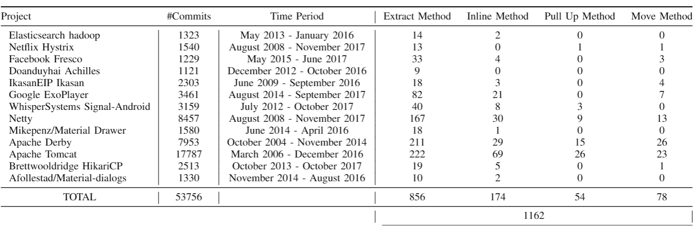
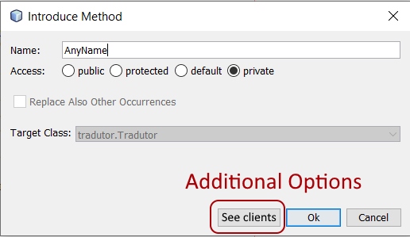

This website contains complementary data to the paper.
Background:Refactoring is a common software development practice with books defining standard mechanics of popular refactoring types. There are also IDEs with different implementations for those common refactoring types. However, it is unclear whether (i) developers follow standard mechanics presented in refactoring books, and (ii) IDEs offer tooling support for refactorings performed in practice. To answer these questions, we conduct an analysis of 1,162 refactorings composed of more than 100k modifications from 13 real software projects. Our results reveal that developers often apply recurring additional modifications besides the standard ones in their refactorings, a.k.a. customized refactorings. Customized refactorings contain additional modifications not covered by the most popular refactoring book. For instance, we found this is the case of 80.77% of the Move Method instances observed in software projects. We also study the refactoring tools of popular IDEs and observed that several customizations often applied by developers are not fully supported. Additionally, to understand the relevance of these customizations, we conducted a survey with 41 developers about the most frequent customizations we found. Developers confirm they apply those customized refactorings in practice and agree proper tool support is required to perform them. Our results suggest this is one of the key reasons why developers do not widely use tools to apply refactorings. Moreover, refactoring guidelines must be updated to reflect typical refactoring customizations. Update of these guidelines can help IDE builders to improve refactoring support for developers applying their customizations. Our contributions include customization patterns applied by developers that serve as the basis for updating guidelines and improving tool support.
The list of projects is detailed below. The first column indicates the project name. Then, we indicated the number of commits and the analyzed period. Finally, the last columns indicate the number of refactoring instances.


| # | Artifact | Description |
|---|---|---|
| 1 | EM instances.csv | This file contains the instances of Extract Method. |
| 2 | IM instances.csv | This file contains the instances of Inline Method. |
| 3 | MM instances.csv | This file contains the instances of Move Method. |
| 4 | PUM instances.csv | This file contains the instances of Pull Up Method. |
| 5 | EM modifications.rar | This file contains the code modifications detected during Extract Method Application. |
| 6 | IM modifications.txt | This file contains the code modifications detected during Inline Method Application. |
| 7 | MM modifications.txt | This file contains the code modifications detected during Move Method Application. |
| 8 | PUM modifications.txt | This file contains the code modifications detected during Pull Up Method Application. |
| 9 | EM patterns.csv | This file contains the patterns of Extract Method. |
| 10 | IM patterns.csv | This file contains the patterns of Inline Method. |
| 11 | MM patterns.csv | This file contains the patterns of Move Method. |
| 12 | PUM patterns.csv | This file contains the patterns of Pull Up Method. |
| 13 | Survey.csv | This file contains the survey questions and answers. |